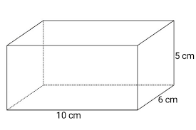

Soal no 4 SP2.1
14 cm
6 cm
Buatlah fungsi hitung Luas Persegi Panjang dengan 2 parameter panjang dan lebar, fungsi tersebut meneruskan integer sebagai hasil perhitungan. Buatlah dengan keluaran pada halaman web seperti di bawah ini. Simpan dengan nama latihan-1.js di dalam direktori SP2.1 panjang : lebar : Luas Persegi Panjang :
Diketahui :
function persegiPanjang (p, l) {
var panjangPersegi ;
var lebarPersegi;
return p * l;
}
document.write (persegiPanjang (14, 6));
jawaban :
panjang = 14 cm
luas = 6 cm
lebar = p x l =
cm
Soal no 5 SP2.1
